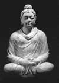

Yaygın olarak Buda adıyla bilinen Siddharta Gautama, MÖ 5. ya da 6. yy’da, bugün Nepal sınırları içerisinde bulunan bir köyde dünyaya geldi. Efsaneye göre babası, Himalaya Dağları’nın eteğindeki bir bölgeyi yöneten güçlü bir kraldı. Genç Siddharta refah içinde ayrıcalıklı bir insan olarak büyüdü.

Ne var ki sahip olduğu maddi zenginlikler genç prensi tatmin etmiyordu. Sarayın dışında acı çekenleri görmek canını sıkıyordu. İnsanların acılarının kaynağı neydi? Bunlar nasıl aşılabilirdi?
Bu soruların yanıtlarını bulmayı uman Siddharta babasının krallığından ayrıldı. Yirmili yaşlarının sonlarına doğru çileciliği seçti, dini bir hayat yaşamaya başladı ve kendini meditasyona verdi. Ne var ki kısa zamanda gördü ki yoksulluk ve bireysel acılar onu zenginlikten daha fazla gerçeğe yaklaştırmamıştı.
Nihayet 35 yaşındayken ufuk açıcı bir deneyim yaşadı. Budistler bu olaya “Büyük Aydınlanma” adını verdiler. 49 gün meditasyon yaptıktan sonra bir incir ağacının altında Nirvana’ya ulaştı. Varlığın tüm sırları bu mutlak aydınlanma anında ona açıldı. O zamandan beri “aydınlanmış olan” anlamına gelen Buda adıyla anılmaktadır.
Buda insan acılarının kaynağının arzu olduğunu vaaz etti. Ona göre acılardan kurtulmanın yolu arzulardan özgürleşmek, benlikten kurtulmak ve ahlaki yaşam için gereken “sekiz katlı asil yoldan” gitmekti. Bu anlayış pek çok Uzak Doğu kültürünün temellerini teşkil edecek olan ahlaki bir öğretiydi.
Büyük aydınlanmadan sonra Buda, Ganj Düzlüğü olarak bilinen Kuzey Hindistan ve Nepal boyunca seyahat etti. İnsanlara vaaz verdi ve yeni takipçiler kazandı. Sonunda babasının krallığına döndü ve pek çok akrabasını budist yaptı.
Budizm Buda hayattayken hızla yayıldı. Yeni bir din kurucusu olarak pek çok suikast girişiminden sağ olarak kurtulmayı başardı. 80 yaşında öldü. Ölmeden önce pek çok tapınak kurmuş ve Budizmi bölgenin en yaygın dini haline getirmiştir.
Ek Bilgiler
1- Genç bir prens olan Buda gerçeklerden fazlasıyla uzak büyütülmüştü. Öyle ki yaşlı köylülerle tanıştığında allak bullak oldu. Efsaneye göre hizmetçilerinden biri ona bütün insanların yaşlandığını ve bunun doğal bir durum olduğunu açıklamak zorunda kalmıştı.
2- Buda ölümünden sonra yakıldı. Küllerinin arasında bulunduğuna inanılan bir diş, Sri Lanka’daki bir Budist tapınağında saklanmaktadır.
3- Siddharta 16 yaşında evlenmiş ve Rahula adında bir oğlu olmuştur. Söylendiğine göre Buda’nın saraydan kaçtığı gün Rahula’nın doğduğu gündür.